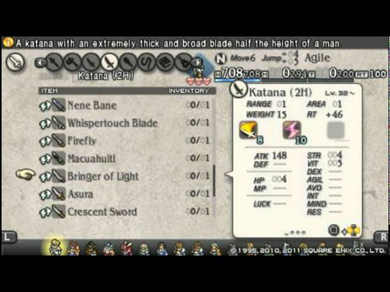
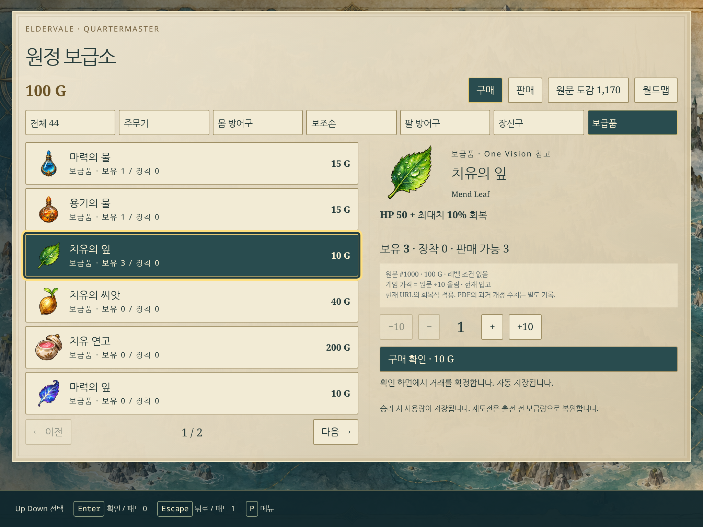
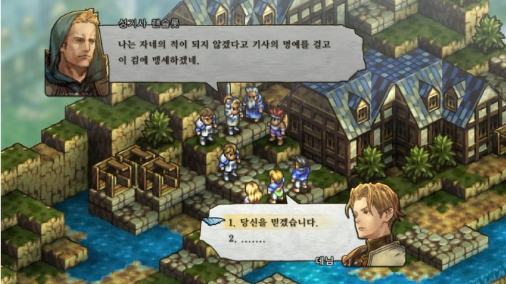
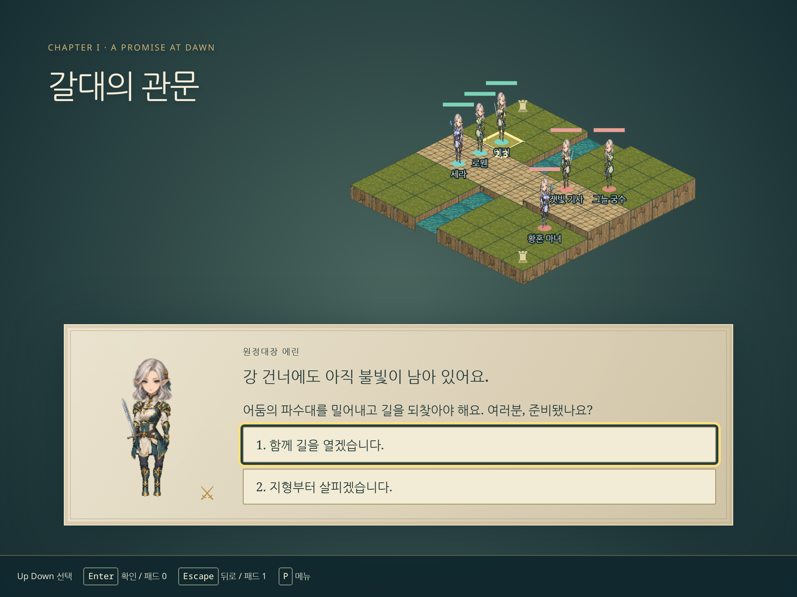
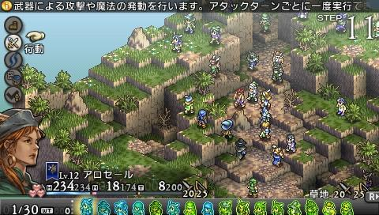
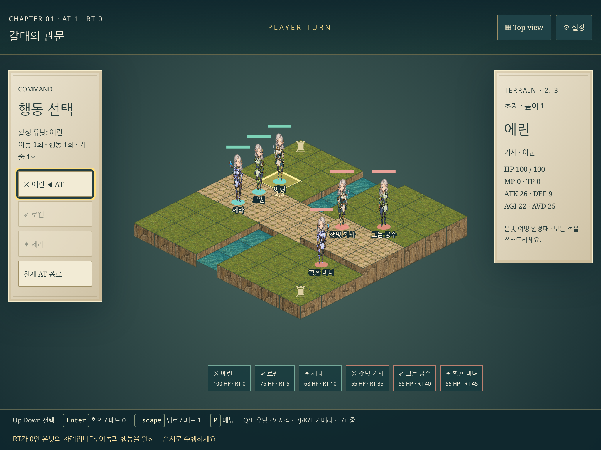
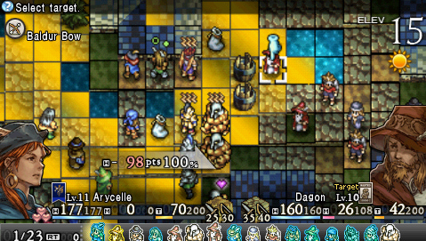
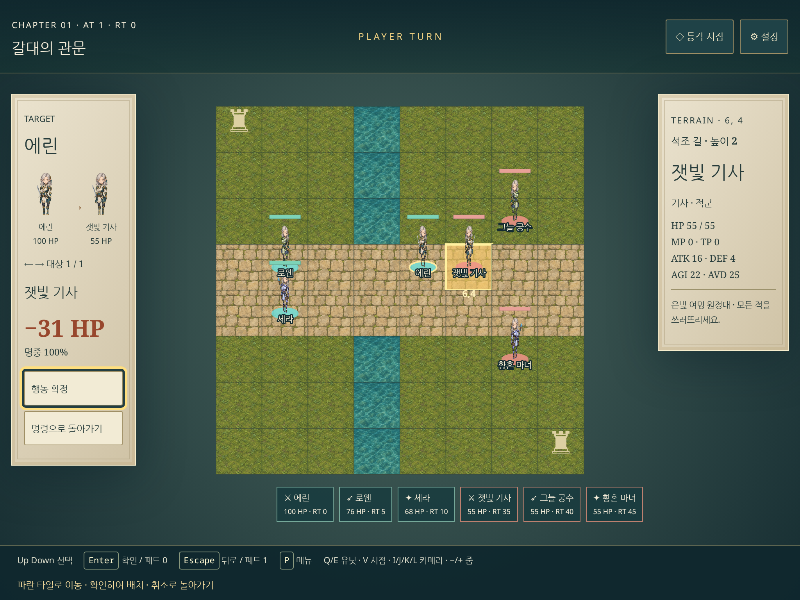

원본 9장 ↔ 현재 화면
오른쪽은 실제 1024×768 CSS · DPR2(2048×1536 픽셀). 왼쪽은 동일 1024×768 CSS 프레임 안에 종횡비를 보존해 배치한 원본입니다. 픽셀 복제가 아니라 용도·정보·시야·조작을 대조했습니다.
원본 · party_select.jpeg현재 · 출전 부대 / 능력 / 후보캡처 2026-10-04 · 레이아웃 차이/수정/남은 범위는 SCREEN_COMPARISON.md 참조.원본 · equipment.jpg현재 · 5슬롯 / 장비 아이콘 / 기초와 합산 능력캡처 2026-10-04 · 레이아웃 차이/수정/남은 범위는 SCREEN_COMPARISON.md 참조.원본 · item_select.jpg현재 · 품목 목록과 설명 · 거래는 새로 승인된 확장






